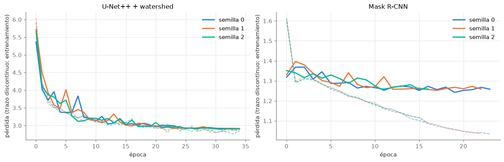
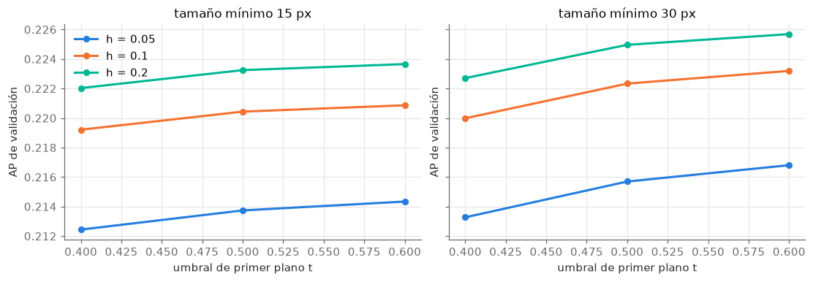

Modelos de segmentación#
En este capítulo describimos los seis enfoques comparados, su grado de implementación y cómo se entrenaron. Todos producen un mapa de etiquetas de instancias del tamaño de la imagen, de modo que se evalúan con el mismo código (src/project/metrics_seg.py). Los hiperparámetros de post-proceso de cada modelo se eligen solo en validación (src/project/eval_seg.py, etapa select), y esa elección queda congelada en results/seg/eval/selection.pkl antes de calcular cualquier métrica de test.
import pandas as pd
import matplotlib.pyplot as plt
from project.book_utils import CAT, exists, need, style
style()
pd.set_option("display.precision", 3)
LABELS = {"unetpp_main": "U-Net++ + watershed", "hover_main": "Hover (NP + HV)", "maskrcnn_main": "Mask R-CNN",
"cellpose_zeroshot": "Cellpose cero-shot", "cellpose_finetune": "Cellpose ajustado", "sam_box": "SAM (cajas)",
"sam_auto": "SAM automático", "otsu_watershed": "Otsu + watershed"}
Inventario y grado de implementación#
Modelo |
Implementación |
Origen y licencia |
Objetivo de entrenamiento |
Semillas |
|---|---|---|---|---|
Otsu + watershed [Beucher and Lantuéjoul, 1979, Otsu, 1979] |
Propia ( |
— |
Sin aprendizaje: umbral de Otsu sobre intensidad o textura (Sobel), marcadores por distancia |
determinista |
U-Net++ + watershed [Zhou et al., 2018] |
Propia en Keras 3 ( |
— |
3 clases (fondo, interior, borde/contacto); CE + Dice; supervisión profunda en las 4 salidas anidadas |
3 |
Variante tipo Hover-Net [Graham et al., 2019] |
Propia en Keras sobre la misma U-Net++, con dos cabezas |
— |
NP: CE + Dice; HV: MSE + MSGE de los mapas horizontal y vertical |
1 (exploratorio) |
Mask R-CNN R50-FPN v2 [He et al., 2017] |
torchvision, preentrenado en COCO |
BSD-3-Clause |
Cajas y máscaras 28 × 28 por instancia; anclas y máximo de detecciones derivados del EDA |
3 |
Cellpose |
|
BSD-3-Clause |
(a) cero-shot con diámetro estimado; (b) ajuste fino 100 épocas |
(a) determinista; (b) 1 |
SAM ViT-B [Kirillov et al., 2023] |
|
Apache-2.0 |
Sin ajuste: (a) generador automático; (b) prompts de caja de Mask R-CNN |
determinista |
Mask R-CNN, Cellpose y SAM corren en PyTorch; la U-Net++ y la variante Hover, en Keras 3 con backend de PyTorch. Usar el mismo backend evita mezclar dos marcos de trabajo en la GPU, y la interfaz común es el mapa de etiquetas guardado en results/seg/<modelo>/seed_XX/.
U-Net++ con watershed#
La red tiene 5 niveles de codificación con 32, 64, 128, 256 y 512 filtros y los nodos anidados \(X^{i,j}\) de U-Net++. Cada bloque son dos convoluciones 3 × 3 con normalización por lotes y ReLU. Las cuatro salidas \(X^{0,1},\dots,X^{0,4}\) tienen una cabeza softmax de 3 clases y la pérdida suma las cuatro (supervisión profunda); en inferencia usamos la salida más profunda, \(X^{0,4}\).
El objetivo de 3 clases convierte la separación de células en contacto en un problema de clasificación de píxeles: la clase «borde» cubre 2 píxeles hacia dentro del contorno de cada célula, incluidas las zonas de contacto. El watershed inunda \(-P(\text{interior})\) suavizada desde los h-máximos de esa misma probabilidad, restringido al primer plano \(P(\text{interior}) + P(\text{borde}) > t\). La rejilla de post-proceso tiene 18 combinaciones: \(t \in \{0.4, 0.5, 0.6\}\), \(h \in \{0.05, 0.1, 0.2\}\) y tamaño mínimo \(\in \{15, 30\}\) píxeles.
Entrenamos con AdamW (tasa 10⁻³, decaimiento 10⁻⁴), 2 épocas de calentamiento y decaimiento coseno, recortes de 256 × 256, lotes de 8, 100 pasos por época, hasta 35 épocas y paciencia 8 sobre la pérdida de validación, con precisión mixta.
runs = []
for model in LABELS:
for s in range(3):
p = f"seg/{model}/seed_{s:02d}"
if exists(f"{p}/timing.pkl"):
t = need(f"{p}/timing.pkl")
runs.append(dict(modelo=LABELS[model], semilla=s, parámetros=t.get("params"), épocas=t.get("epochs_run"),
mejor_época=t.get("best_epoch"), s_por_época=t.get("sec_per_epoch"),
s_inferencia_por_imagen=t.get("infer_sec_per_image", t.get("infer_sec_per_image_grid")),
VRAM_pico_GB=t.get("peak_vram_gb")))
runs = pd.DataFrame(runs)
runs
| modelo | semilla | parámetros | épocas | mejor_época | s_por_época | s_inferencia_por_imagen | VRAM_pico_GB | |
|---|---|---|---|---|---|---|---|---|
| 0 | U-Net++ + watershed | 0 | 9.053e+06 | 35.0 | 27.0 | 79.662 | 0.106 | 8.764 |
| 1 | U-Net++ + watershed | 1 | 9.053e+06 | 35.0 | 31.0 | 53.319 | 0.099 | 9.027 |
| 2 | U-Net++ + watershed | 2 | 9.053e+06 | 35.0 | 31.0 | 52.962 | 0.099 | 9.647 |
| 3 | Hover (NP + HV) | 0 | 9.053e+06 | 35.0 | 27.0 | 70.588 | 0.122 | 9.093 |
| 4 | Mask R-CNN | 0 | 4.588e+07 | 24.0 | 19.0 | 174.156 | 2.670 | 10.094 |
| 5 | Mask R-CNN | 1 | 4.588e+07 | 23.0 | 17.0 | 184.074 | 2.532 | 10.314 |
| 6 | Mask R-CNN | 2 | 4.588e+07 | 17.0 | 11.0 | 155.509 | 2.412 | 10.010 |
| 7 | Cellpose cero-shot | 0 | NaN | NaN | NaN | NaN | 5.255 | NaN |
| 8 | Cellpose ajustado | 0 | NaN | NaN | NaN | NaN | 3.452 | NaN |
| 9 | SAM (cajas) | 0 | NaN | NaN | NaN | NaN | 0.977 | NaN |
| 10 | SAM automático | 0 | NaN | NaN | NaN | NaN | 13.980 | NaN |
| 11 | Otsu + watershed | 0 | NaN | NaN | NaN | NaN | 0.180 | NaN |
Las tres semillas de la U-Net++ llegaron al máximo de 35 épocas sin activar la parada temprana. La primera semilla tardó más por época porque coincidió con trabajos de CPU en paralelo (bitácora, 07:40); las otras dos tardaron unos 53 s por época. Los tiempos de inferencia de los modelos de Cellpose y SAM incluyen toda la rejilla de post-proceso o la generación de máscaras, y no son comparables uno a uno con los de las redes; la comparación de latencia controlada está en el capítulo Ablaciones, robustez, calibración y eficiencia en segmentación.
fig, axes = plt.subplots(1, 2, figsize=(12, 3.8))
for k, (model, ax) in enumerate(zip(["unetpp_main", "maskrcnn_main"], axes)):
for s in range(3):
p = f"seg/{model}/seed_{s:02d}/history.pkl"
if exists(p):
h = pd.DataFrame(need(p))
ax.plot(h.epoch, h.loss, color=CAT[s], lw=1.2, alpha=0.6, ls="--")
ax.plot(h.epoch, h.val_loss, color=CAT[s], lw=2, label=f"semilla {s}")
ax.set(title=LABELS[model], xlabel="época", ylabel="pérdida (trazo discontinuo: entrenamiento)")
ax.legend()
plt.show()

Las curvas muestran la pérdida de entrenamiento (discontinua) y la de validación (continua) por semilla. En las dos redes la pérdida de validación sigue a la de entrenamiento sin separarse de forma sostenida, así que el límite de épocas, y no el sobreajuste, es lo que corta el entrenamiento. La pérdida de Mask R-CNN es la suma de sus cinco términos (clasificación y regresión del RPN, clasificación y regresión de cajas, máscara) y no es comparable en escala con la de la U-Net++.
Mask R-CNN#
Partimos de maskrcnn_resnet50_fpn_v2 con pesos de COCO. Reemplazamos el generador de anclas por tamaños de 12, 24, 48, 96 y 192 píxeles con razones de aspecto 0.5, 1 y 2, que cubren el rango de lados de caja del EDA (8.5 a 89 píxeles entre los percentiles 1 y 99), y permitimos hasta 1000 detecciones por imagen, por encima del máximo de 790 células anotadas en una imagen. Las cabezas de caja y de máscara se reinician para dos clases (fondo y célula). Entrenamos con SGD (momento 0.9, tasa 0.01, calentamiento de 200 iteraciones y coseno), lotes de 2 imágenes completas, volteos y ajuste de brillo y contraste, precisión mixta, hasta 24 épocas y paciencia 5.
El post-proceso convierte las máscaras en un mapa de etiquetas: ordena las instancias por puntuación, binariza cada máscara con un umbral y asigna cada píxel a la instancia de mayor puntuación que lo cubre. En validación elegimos el umbral de puntuación y el de máscara.
Variante tipo Hover-Net#
Usamos la misma U-Net++ con dos cabezas: NP (probabilidad de célula) y HV (distancia horizontal y vertical normalizada al centroide de cada célula, en \([-1, 1]\)). El post-proceso sigue a HoVer-Net: los gradientes de los mapas HV son grandes en los límites entre células, y restarlos a la probabilidad NP da los marcadores del watershed. No es la implementación oficial: no tiene la rama de clasificación de núcleos ni el backbone preactivado de HoVer-Net, y la rotulamos como variante.
Cellpose#
El modelo generalista cyto3 predice campos de flujo hacia el centro de cada célula y una probabilidad de célula. En el modo cero-shot estimamos el diámetro de cada imagen con el estimador de Cellpose; en el modo ajustado entrenamos 100 épocas sobre las imágenes de entrenamiento (tasa 0.005, lotes de 8) y usamos el diámetro medio de las células de entrenamiento que calcula Cellpose al ajustar (diam_labels). En validación elegimos el umbral de probabilidad de célula (−1, 0 o 1) y el de error de flujo (0.4 o 0.6).
SAM#
Usamos SAM ViT-B sin ajuste. En el modo automático, el generador recorre una rejilla de 48 × 48 puntos; descartamos las máscaras que ocupan más del 2 % de la imagen (fondo o grupos de células) y en validación elegimos el umbral de IoU predicho (0.70, 0.80 o 0.88) y el de estabilidad (0.8 o 0.9). En el modo con cajas, SAM recibe como prompt cada caja detectada por Mask R-CNN (semilla 0) y devuelve una máscara por caja; en validación elegimos el umbral de puntuación de la caja (0.3 a 0.7). Este modo mide si SAM mejora las máscaras de un detector entrenado en el dominio.
Selección del post-proceso en validación#
La tabla muestra la configuración elegida para cada modelo y el AP medio de validación con esa configuración, promediado entre las semillas disponibles. Esta es la única información de rendimiento que usamos para decidir; las métricas de test están en el capítulo siguiente.
sel = need("seg/eval/selection.pkl")
tab = pd.DataFrame([dict(modelo=LABELS.get(m, m), configuración=v["config"], AP_val=v["val_ap"], semillas=len(v["seeds"]),
configuraciones_probadas=len(v["grid"]),
rango_AP_rejilla=v["grid"].max() - v["grid"].min()) for m, v in sel.items() if m in LABELS])
tab.sort_values("AP_val", ascending=False)
| modelo | configuración | AP_val | semillas | configuraciones_probadas | rango_AP_rejilla | |
|---|---|---|---|---|---|---|
| 2 | Cellpose ajustado | cp+0_f0.4 | 0.264 | 1 | 6 | 0.062 |
| 5 | Mask R-CNN | s0.4_m0.6 | 0.245 | 3 | 15 | 0.031 |
| 1 | U-Net++ + watershed | t0.60_h0.20_m30 | 0.226 | 3 | 18 | 0.013 |
| 7 | SAM (cajas) | s0.4 | 0.199 | 1 | 5 | 0.011 |
| 4 | Hover (NP + HV) | t0.60_k0.50_m30 | 0.109 | 1 | 18 | 0.077 |
| 3 | Cellpose cero-shot | cp+0_f0.4 | 0.096 | 1 | 6 | 0.026 |
| 6 | SAM automático | p0.80_s0.90 | 0.025 | 1 | 6 | 0.006 |
| 0 | Otsu + watershed | texture_s1_d8_m30 | 0.009 | 1 | 24 | 0.009 |
El rango de AP dentro de la rejilla mide cuánto depende cada modelo de su post-proceso. Un rango grande significa que una mala elección de umbrales puede cambiar el orden entre modelos, y justifica haber elegido el post-proceso de todos los modelos con la misma regla y el mismo conjunto de validación.
if "unetpp_main" in sel:
g = sel["unetpp_main"]["grid"]
G = pd.DataFrame([dict(zip(["t_fg", "h", "min_size"], [float(c.split("_")[0][1:]), float(c.split("_")[1][1:]),
int(c.split("_")[2][1:])]), AP=v) for c, v in g.items()])
fig, axes = plt.subplots(1, 2, figsize=(10, 3.4), sharey=True)
for ax, ms in zip(axes, (15, 30)):
for k, h in enumerate((0.05, 0.1, 0.2)):
d = G[(G.min_size == ms) & (G.h == h)].sort_values("t_fg")
ax.plot(d.t_fg, d.AP, "o-", color=CAT[k], label=f"h = {h}", ms=5)
ax.set(title=f"tamaño mínimo {ms} px", xlabel="umbral de primer plano t", ylabel="AP de validación")
axes[0].legend()
plt.show()
